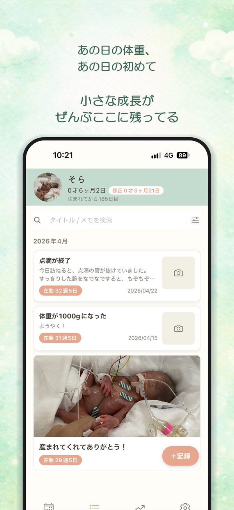
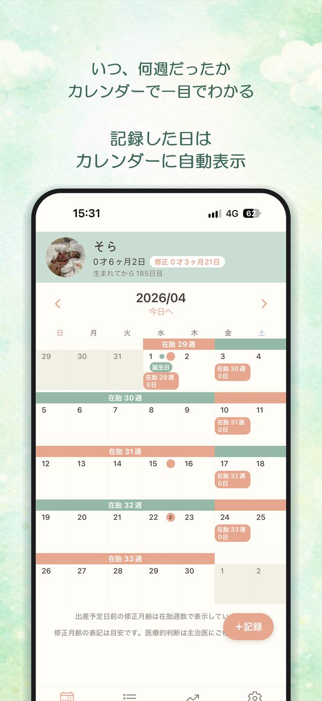
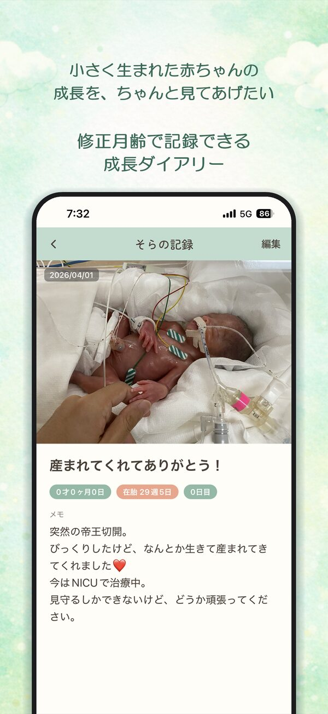
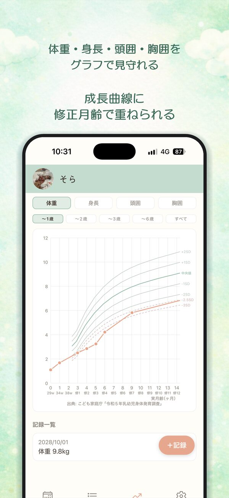

【仮置き・後で修正】
上の子は、25週・800gで生まれました。搾乳をして、面会に通う毎日でした。
ベビーダイアリーを買ったものの、何をどう書けばいいのか分からず、白いページが増えていきました。
下の子が生まれたとき、上の子はこの月齢の頃どうだったのか、思い出したくなりました。生まれた日ではなく、修正月齢で並べて見返せる記録があればいい。そう考えて、このアプリをつくりました。
早産児向けの育児記録アプリ。
修正月齢がカレンダーでわかる
iPhone向けアプリです

日付ごとに、修正月齢が表示されます。

その日の様子を、修正月齢といっしょに書き残せます。

修正月齢を基準に、成長曲線に記録を重ねて見られます。

出典: こども家庭庁「令和5年乳幼児身体発育調査」
【仮置き・後で修正】
上の子は、25週・800gで生まれました。搾乳をして、面会に通う毎日でした。
ベビーダイアリーを買ったものの、何をどう書けばいいのか分からず、白いページが増えていきました。
下の子が生まれたとき、上の子はこの月齢の頃どうだったのか、思い出したくなりました。生まれた日ではなく、修正月齢で並べて見返せる記録があればいい。そう考えて、このアプリをつくりました。
iPhone向けアプリです
お問い合わせ: teeda.studio@gmail.com